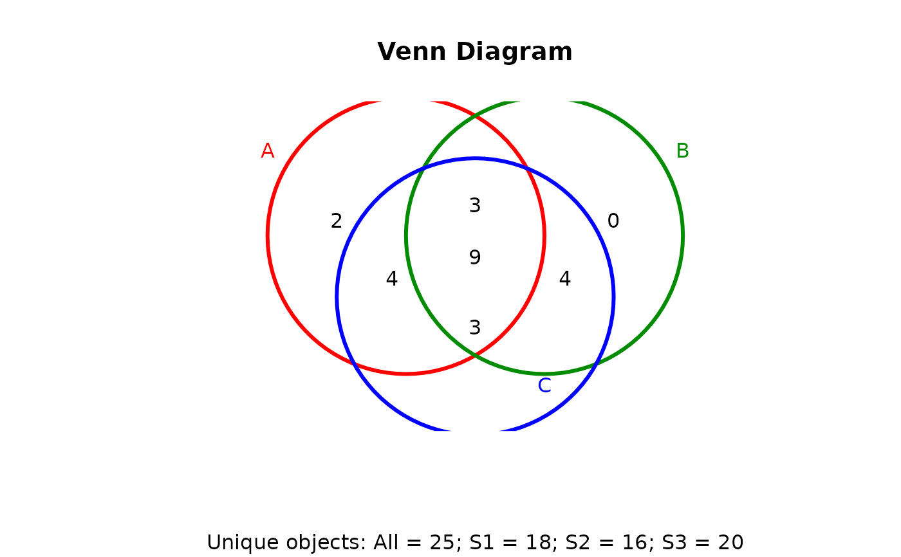
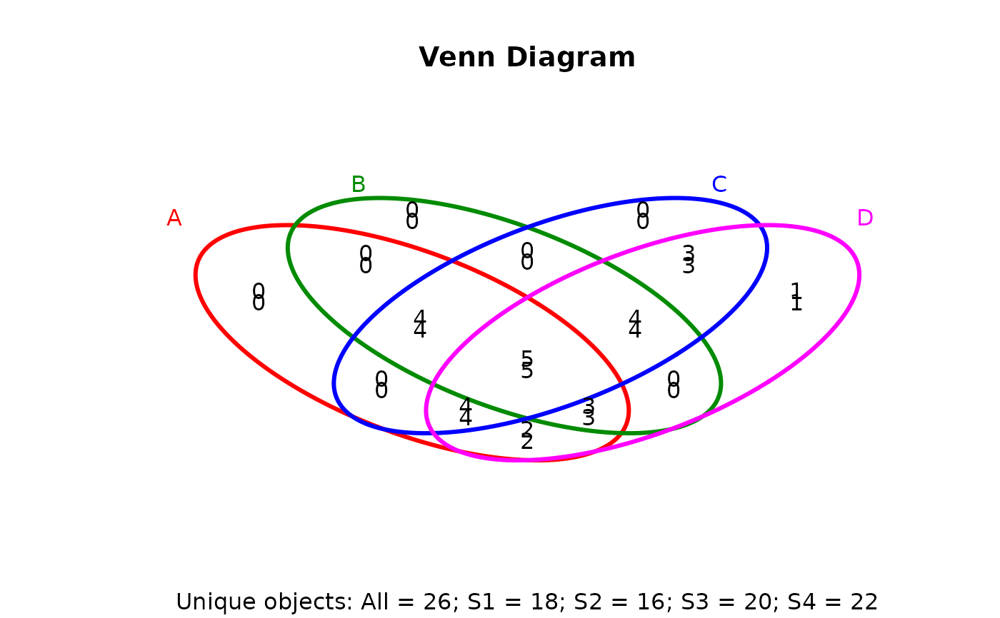
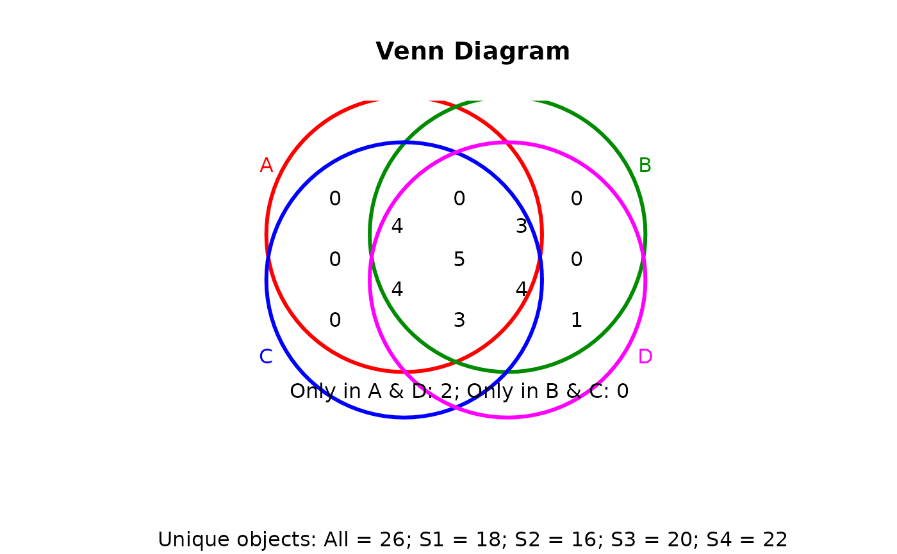
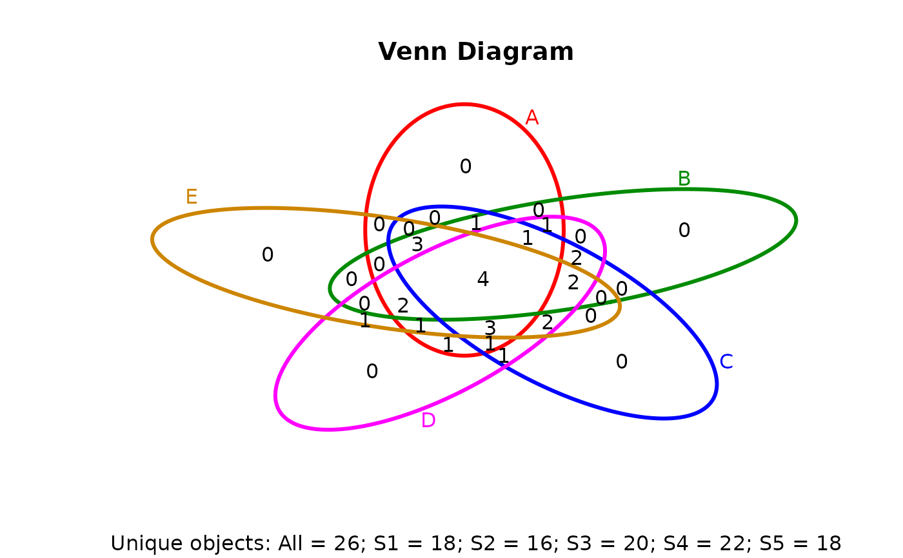
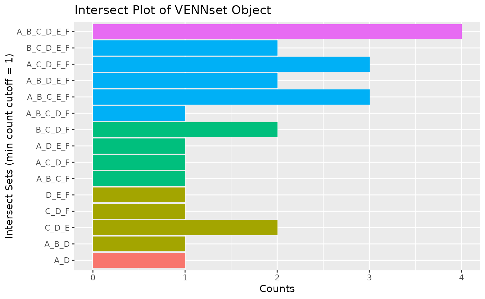
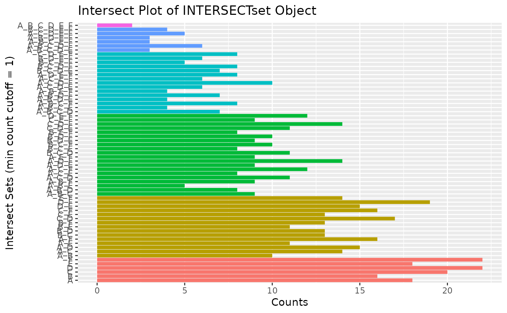
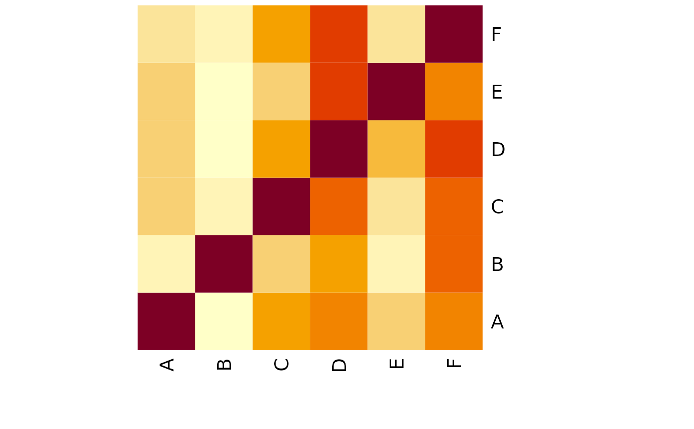
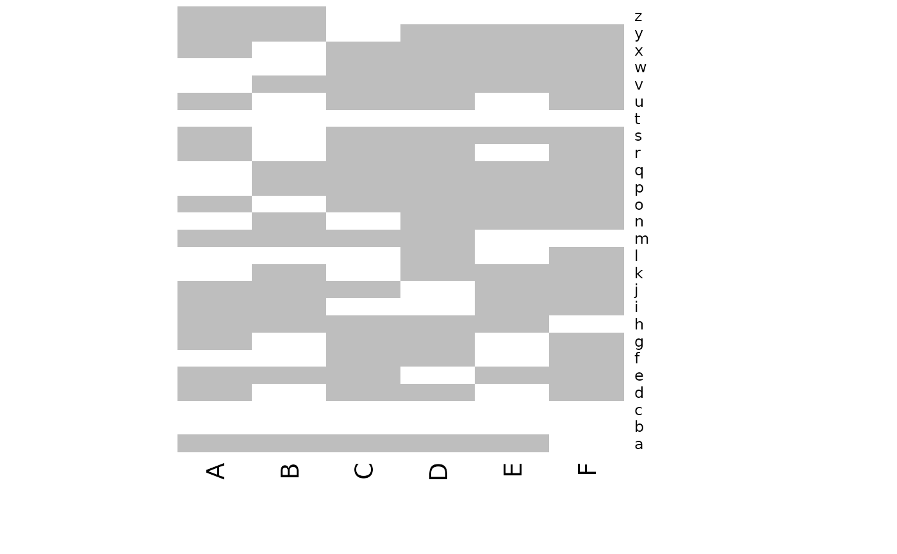

Plot 2-5 way Venn diagrams
vennPlot.RdPloting function of 2-5 way Venn diagrams from 'VENNset' objects or count set vectors. A useful feature is the possiblity to combine the counts from several Venn comparisons with the same number of label sets in a single Venn diagram.
vennPlot(x, mymain = "Venn Diagram", mysub = "default", setlabels = "default", yoffset = seq(0, 10, by = 0.34), ccol = rep(1, 31), colmode = 1, lcol = c("#FF0000", "#008B00", "#0000FF", "#FF00FF", "#CD8500"), lines = c("#FF0000", "#008B00", "#0000FF", "#FF00FF", "#CD8500"), mylwd = 3, diacol = 1, type = "ellipse", ccex = 1, lcex = 1, sepsplit = "_", ...)
Arguments
| x |
|
|---|---|
| mymain | Main title of plot. |
| mysub | Subtitle of plot. Default |
| setlabels | The argument |
| yoffset | The results from several Venn comparisons can be combined in a single Venn diagram
by assigning to |
| ccol | Character or numeric |
| colmode | See argument |
| lcol | Character or numeric |
| lines | Character or numeric |
| mylwd | Defines line width of shapes used in plot. |
| diacol | See argument |
| type | Defines shapes used to plot 4-way Venn diagram. Default |
| ccex | Controls font size for count values. |
| lcex | Controls font size for set labels. |
| sepsplit | Character used to separate sample labels in Venn counts. |
| ... | Additional arguments to pass on. |
Value
Venn diagram plot.
References
See examples in 'The Electronic Journal of Combinatorics': http://www.combinatorics.org/files/Surveys/ds5/VennSymmExamples.html
Author
Thomas Girke
Note
The functions provided here are an extension of the Venn diagram resources on this site: http://manuals.bioinformatics.ucr.edu/home/R_BioCondManual#TOC-Venn-Diagrams
See also
overLapper, olBarplot
Examples
## Sample data setlist <- list(A=sample(letters, 18), B=sample(letters, 16), C=sample(letters, 20), D=sample(letters, 22), E=sample(letters, 18), F=sample(letters, 22)) ## 2-way Venn diagram vennset <- overLapper(setlist[1:2], type="vennsets") vennPlot(vennset)## 4-way Venn diagram vennset <- overLapper(setlist[1:4], type="vennsets") vennPlot(list(vennset, vennset))## Pseudo 4-way Venn diagram with circles vennPlot(vennset, type="circle")## Alternative Venn count input to vennPlot (not recommended!) counts <- sapply(vennlist(vennset), length) vennPlot(counts)## 6-way Venn comparison as bar plot vennset <- overLapper(setlist[1:6], type="vennsets") olBarplot(vennset, mincount=1)## Bar plot of standard intersect counts interset <- overLapper(setlist, type="intersects") olBarplot(interset, mincount=1)#> [1] "setlist" "intersectmatrix" "complexitylevels" "vennlist"#> [1] "setlist" "intersectmatrix" "complexitylevels" "intersectlist"#> $A #> [1] "k" "i" "g" "x" "l" "r" "t" "w" "n" "y" "d" "o" "e" "s" "j" "b" "u" "z" #> #> $B #> [1] "x" "e" "t" "c" "d" "a" "u" "s" "h" "b" "z" "p" "i" "j" "k" "w" #> #> $C #> [1] "k" "n" "j" "t" "h" "e" "m" "z" "a" "y" "q" "p" "i" "v" "c" "b" "d" "u" "l" #> [20] "r" #> #> $D #> [1] "a" "o" "s" "t" "c" "q" "z" "m" "n" "b" "w" "l" "g" "d" "r" "v" "p" "y" "k" #> [20] "x" "f" "h" #> #> $E #> [1] "b" "v" "a" "l" "t" "g" "d" "k" "n" "p" "u" "x" "r" "s" "m" "f" "j" "i" #> #> $F #> [1] "b" "y" "i" "q" "k" "a" "s" "c" "p" "j" "x" "e" "h" "t" "l" "u" "f" "r" "z" #> [20] "d" "g" "n" #>#> A B C D E F #> a 0 1 1 1 1 1 #> b 1 1 1 1 1 1 #> c 0 1 1 1 0 1 #> d 1 1 1 1 1 1 #> e 1 1 1 0 0 1 #> f 0 0 0 1 1 1 #> g 1 0 0 1 1 1 #> h 0 1 1 1 0 1 #> i 1 1 1 0 1 1 #> j 1 1 1 0 1 1 #> k 1 1 1 1 1 1 #> l 1 0 1 1 1 1 #> m 0 0 1 1 1 0 #> n 1 0 1 1 1 1 #> o 1 0 0 1 0 0 #> p 0 1 1 1 1 1 #> q 0 0 1 1 0 1 #> r 1 0 1 1 1 1 #> s 1 1 0 1 1 1 #> t 1 1 1 1 1 1 #> u 1 1 1 0 1 1 #> v 0 0 1 1 1 0 #> w 1 1 0 1 0 0 #> x 1 1 0 1 1 1 #> y 1 0 1 1 0 1 #> z 1 1 1 1 0 1#> [1] 1 1 1 1 1 1 2 2 2 2 2 2 2 2 2 2 2 2 2 2 2 3 3 3 3 3 3 3 3 3 3 3 3 3 3 3 3 3 #> [39] 3 3 3 4 4 4 4 4 4 4 4 4 4 4 4 4 4 4 5 5 5 5 5 5 6#> $A #> character(0) #> #> $B #> character(0) #> #> $C #> character(0) #> #> $D #> character(0) #> #> $E #> character(0) #> #> $F #> character(0) #> #> $A_B #> character(0) #> #> $A_C #> character(0) #> #> $A_D #> [1] "o" #> #> $A_E #> character(0) #> #> $A_F #> character(0) #> #> $B_C #> character(0) #> #> $B_D #> character(0) #> #> $B_E #> character(0) #> #> $B_F #> character(0) #> #> $C_D #> character(0) #> #> $C_E #> character(0) #> #> $C_F #> character(0) #> #> $D_E #> character(0) #> #> $D_F #> character(0) #> #> $E_F #> character(0) #> #> $A_B_C #> character(0) #> #> $A_B_D #> [1] "w" #> #> $A_B_E #> character(0) #> #> $A_B_F #> character(0) #> #> $A_C_D #> character(0) #> #> $A_C_E #> character(0) #> #> $A_C_F #> character(0) #> #> $A_D_E #> character(0) #> #> $A_D_F #> character(0) #> #> $A_E_F #> character(0) #> #> $B_C_D #> character(0) #> #> $B_C_E #> character(0) #> #> $B_C_F #> character(0) #> #> $B_D_E #> character(0) #> #> $B_D_F #> character(0) #> #> $B_E_F #> character(0) #> #> $C_D_E #> [1] "m" "v" #> #> $C_D_F #> [1] "q" #> #> $C_E_F #> character(0) #> #> $D_E_F #> [1] "f" #> #> $A_B_C_D #> character(0) #> #> $A_B_C_E #> character(0) #> #> $A_B_C_F #> [1] "e" #> #> $A_B_D_E #> character(0) #> #> $A_B_D_F #> character(0) #> #> $A_B_E_F #> character(0) #> #> $A_C_D_E #> character(0) #> #> $A_C_D_F #> [1] "y" #> #> $A_C_E_F #> character(0) #> #> $A_D_E_F #> [1] "g" #> #> $B_C_D_E #> character(0) #> #> $B_C_D_F #> [1] "c" "h" #> #> $B_C_E_F #> character(0) #> #> $B_D_E_F #> character(0) #> #> $C_D_E_F #> character(0) #> #> $A_B_C_D_E #> character(0) #> #> $A_B_C_D_F #> [1] "z" #> #> $A_B_C_E_F #> [1] "i" "j" "u" #> #> $A_B_D_E_F #> [1] "s" "x" #> #> $A_C_D_E_F #> [1] "l" "n" "r" #> #> $B_C_D_E_F #> [1] "a" "p" #> #> $A_B_C_D_E_F #> [1] "b" "d" "k" "t" #>#> $A #> [1] "b" "d" "e" "g" "i" "j" "k" "l" "n" "o" "r" "s" "t" "u" "w" "x" "y" "z" #> #> $B #> [1] "a" "b" "c" "d" "e" "h" "i" "j" "k" "p" "s" "t" "u" "w" "x" "z" #> #> $C #> [1] "a" "b" "c" "d" "e" "h" "i" "j" "k" "l" "m" "n" "p" "q" "r" "t" "u" "v" "y" #> [20] "z" #> #> $D #> [1] "a" "b" "c" "d" "f" "g" "h" "k" "l" "m" "n" "o" "p" "q" "r" "s" "t" "v" "w" #> [20] "x" "y" "z" #> #> $E #> [1] "a" "b" "d" "f" "g" "i" "j" "k" "l" "m" "n" "p" "r" "s" "t" "u" "v" "x" #> #> $F #> [1] "a" "b" "c" "d" "e" "f" "g" "h" "i" "j" "k" "l" "n" "p" "q" "r" "s" "t" "u" #> [20] "x" "y" "z" #> #> $A_B #> [1] "b" "d" "e" "i" "j" "k" "s" "t" "u" "w" "x" "z" #> #> $A_C #> [1] "b" "d" "e" "i" "j" "k" "l" "n" "r" "t" "u" "y" "z" #> #> $A_D #> [1] "b" "d" "g" "k" "l" "n" "o" "r" "s" "t" "w" "x" "y" "z" #> #> $A_E #> [1] "b" "d" "g" "i" "j" "k" "l" "n" "r" "s" "t" "u" "x" #> #> $A_F #> [1] "b" "d" "e" "g" "i" "j" "k" "l" "n" "r" "s" "t" "u" "x" "y" "z" #> #> $B_C #> [1] "a" "b" "c" "d" "e" "h" "i" "j" "k" "p" "t" "u" "z" #> #> $B_D #> [1] "a" "b" "c" "d" "h" "k" "p" "s" "t" "w" "x" "z" #> #> $B_E #> [1] "a" "b" "d" "i" "j" "k" "p" "s" "t" "u" "x" #> #> $B_F #> [1] "a" "b" "c" "d" "e" "h" "i" "j" "k" "p" "s" "t" "u" "x" "z" #> #> $C_D #> [1] "a" "b" "c" "d" "h" "k" "l" "m" "n" "p" "q" "r" "t" "v" "y" "z" #> #> $C_E #> [1] "a" "b" "d" "i" "j" "k" "l" "m" "n" "p" "r" "t" "u" "v" #> #> $C_F #> [1] "a" "b" "c" "d" "e" "h" "i" "j" "k" "l" "n" "p" "q" "r" "t" "u" "y" "z" #> #> $D_E #> [1] "a" "b" "d" "f" "g" "k" "l" "m" "n" "p" "r" "s" "t" "v" "x" #> #> $D_F #> [1] "a" "b" "c" "d" "f" "g" "h" "k" "l" "n" "p" "q" "r" "s" "t" "x" "y" "z" #> #> $E_F #> [1] "a" "b" "d" "f" "g" "i" "j" "k" "l" "n" "p" "r" "s" "t" "u" "x" #> #> $A_B_C #> [1] "b" "d" "e" "i" "j" "k" "t" "u" "z" #> #> $A_B_D #> [1] "b" "d" "k" "s" "t" "w" "x" "z" #> #> $A_B_E #> [1] "b" "d" "i" "j" "k" "s" "t" "u" "x" #> #> $A_B_F #> [1] "b" "d" "e" "i" "j" "k" "s" "t" "u" "x" "z" #> #> $A_C_D #> [1] "b" "d" "k" "l" "n" "r" "t" "y" "z" #> #> $A_C_E #> [1] "b" "d" "i" "j" "k" "l" "n" "r" "t" "u" #> #> $A_C_F #> [1] "b" "d" "e" "i" "j" "k" "l" "n" "r" "t" "u" "y" "z" #> #> $A_D_E #> [1] "b" "d" "g" "k" "l" "n" "r" "s" "t" "x" #> #> $A_D_F #> [1] "b" "d" "g" "k" "l" "n" "r" "s" "t" "x" "y" "z" #> #> $A_E_F #> [1] "b" "d" "g" "i" "j" "k" "l" "n" "r" "s" "t" "u" "x" #> #> $B_C_D #> [1] "a" "b" "c" "d" "h" "k" "p" "t" "z" #> #> $B_C_E #> [1] "a" "b" "d" "i" "j" "k" "p" "t" "u" #> #> $B_C_F #> [1] "a" "b" "c" "d" "e" "h" "i" "j" "k" "p" "t" "u" "z" #> #> $B_D_E #> [1] "a" "b" "d" "k" "p" "s" "t" "x" #> #> $B_D_F #> [1] "a" "b" "c" "d" "h" "k" "p" "s" "t" "x" "z" #> #> $B_E_F #> [1] "a" "b" "d" "i" "j" "k" "p" "s" "t" "u" "x" #> #> $C_D_E #> [1] "a" "b" "d" "k" "l" "m" "n" "p" "r" "t" "v" #> #> $C_D_F #> [1] "a" "b" "c" "d" "h" "k" "l" "n" "p" "q" "r" "t" "y" "z" #> #> $C_E_F #> [1] "a" "b" "d" "i" "j" "k" "l" "n" "p" "r" "t" "u" #> #> $D_E_F #> [1] "a" "b" "d" "f" "g" "k" "l" "n" "p" "r" "s" "t" "x" #> #> $A_B_C_D #> [1] "b" "d" "k" "t" "z" #> #> $A_B_C_E #> [1] "b" "d" "i" "j" "k" "t" "u" #> #> $A_B_C_F #> [1] "b" "d" "e" "i" "j" "k" "t" "u" "z" #> #> $A_B_D_E #> [1] "b" "d" "k" "s" "t" "x" #> #> $A_B_D_F #> [1] "b" "d" "k" "s" "t" "x" "z" #> #> $A_B_E_F #> [1] "b" "d" "i" "j" "k" "s" "t" "u" "x" #> #> $A_C_D_E #> [1] "b" "d" "k" "l" "n" "r" "t" #> #> $A_C_D_F #> [1] "b" "d" "k" "l" "n" "r" "t" "y" "z" #> #> $A_C_E_F #> [1] "b" "d" "i" "j" "k" "l" "n" "r" "t" "u" #> #> $A_D_E_F #> [1] "b" "d" "g" "k" "l" "n" "r" "s" "t" "x" #> #> $B_C_D_E #> [1] "a" "b" "d" "k" "p" "t" #> #> $B_C_D_F #> [1] "a" "b" "c" "d" "h" "k" "p" "t" "z" #> #> $B_C_E_F #> [1] "a" "b" "d" "i" "j" "k" "p" "t" "u" #> #> $B_D_E_F #> [1] "a" "b" "d" "k" "p" "s" "t" "x" #> #> $C_D_E_F #> [1] "a" "b" "d" "k" "l" "n" "p" "r" "t" #> #> $A_B_C_D_E #> [1] "b" "d" "k" "t" #> #> $A_B_C_D_F #> [1] "b" "d" "k" "t" "z" #> #> $A_B_C_E_F #> [1] "b" "d" "i" "j" "k" "t" "u" #> #> $A_B_D_E_F #> [1] "b" "d" "k" "s" "t" "x" #> #> $A_C_D_E_F #> [1] "b" "d" "k" "l" "n" "r" "t" #> #> $B_C_D_E_F #> [1] "a" "b" "d" "k" "p" "t" #> #> $A_B_C_D_E_F #> [1] "b" "d" "k" "t" #>#> $setlist #> $setlist$A #> [1] "k" "i" "g" "x" "l" "r" "t" "w" "n" "y" "d" "o" "e" "s" "j" "b" "u" "z" #> #> $setlist$B #> [1] "x" "e" "t" "c" "d" "a" "u" "s" "h" "b" "z" "p" "i" "j" "k" "w" #> #> $setlist$C #> [1] "k" "n" "j" "t" "h" "e" "m" "z" "a" "y" "q" "p" "i" "v" "c" "b" "d" "u" "l" #> [20] "r" #> #> $setlist$D #> [1] "a" "o" "s" "t" "c" "q" "z" "m" "n" "b" "w" "l" "g" "d" "r" "v" "p" "y" "k" #> [20] "x" "f" "h" #> #> $setlist$E #> [1] "b" "v" "a" "l" "t" "g" "d" "k" "n" "p" "u" "x" "r" "s" "m" "f" "j" "i" #> #> $setlist$F #> [1] "b" "y" "i" "q" "k" "a" "s" "c" "p" "j" "x" "e" "h" "t" "l" "u" "f" "r" "z" #> [20] "d" "g" "n" #> #> #> $intersectmatrix #> A B C D E F #> a 0 1 1 1 1 1 #> b 1 1 1 1 1 1 #> c 0 1 1 1 0 1 #> d 1 1 1 1 1 1 #> e 1 1 1 0 0 1 #> f 0 0 0 1 1 1 #> g 1 0 0 1 1 1 #> h 0 1 1 1 0 1 #> i 1 1 1 0 1 1 #> j 1 1 1 0 1 1 #> k 1 1 1 1 1 1 #> l 1 0 1 1 1 1 #> m 0 0 1 1 1 0 #> n 1 0 1 1 1 1 #> o 1 0 0 1 0 0 #> p 0 1 1 1 1 1 #> q 0 0 1 1 0 1 #> r 1 0 1 1 1 1 #> s 1 1 0 1 1 1 #> t 1 1 1 1 1 1 #> u 1 1 1 0 1 1 #> v 0 0 1 1 1 0 #> w 1 1 0 1 0 0 #> x 1 1 0 1 1 1 #> y 1 0 1 1 0 1 #> z 1 1 1 1 0 1 #> #> $complexitylevels #> [1] 1 1 1 1 1 1 2 2 2 2 2 2 2 2 2 2 2 2 2 2 2 3 3 3 3 3 3 3 3 3 3 3 3 3 3 3 3 3 #> [39] 3 3 3 4 4 4 4 4 4 4 4 4 4 4 4 4 4 4 5 5 5 5 5 5 6 #> #> $vennlist #> $vennlist$A #> character(0) #> #> $vennlist$B #> character(0) #> #> $vennlist$C #> character(0) #> #> $vennlist$D #> character(0) #> #> $vennlist$E #> character(0) #> #> $vennlist$F #> character(0) #> #> $vennlist$A_B #> character(0) #> #> $vennlist$A_C #> character(0) #> #> $vennlist$A_D #> [1] "o" #> #> $vennlist$A_E #> character(0) #> #> $vennlist$A_F #> character(0) #> #> $vennlist$B_C #> character(0) #> #> $vennlist$B_D #> character(0) #> #> $vennlist$B_E #> character(0) #> #> $vennlist$B_F #> character(0) #> #> $vennlist$C_D #> character(0) #> #> $vennlist$C_E #> character(0) #> #> $vennlist$C_F #> character(0) #> #> $vennlist$D_E #> character(0) #> #> $vennlist$D_F #> character(0) #> #> $vennlist$E_F #> character(0) #> #> $vennlist$A_B_C #> character(0) #> #> $vennlist$A_B_D #> [1] "w" #> #> $vennlist$A_B_E #> character(0) #> #> $vennlist$A_B_F #> character(0) #> #> $vennlist$A_C_D #> character(0) #> #> $vennlist$A_C_E #> character(0) #> #> $vennlist$A_C_F #> character(0) #> #> $vennlist$A_D_E #> character(0) #> #> $vennlist$A_D_F #> character(0) #> #> $vennlist$A_E_F #> character(0) #> #> $vennlist$B_C_D #> character(0) #> #> $vennlist$B_C_E #> character(0) #> #> $vennlist$B_C_F #> character(0) #> #> $vennlist$B_D_E #> character(0) #> #> $vennlist$B_D_F #> character(0) #> #> $vennlist$B_E_F #> character(0) #> #> $vennlist$C_D_E #> [1] "m" "v" #> #> $vennlist$C_D_F #> [1] "q" #> #> $vennlist$C_E_F #> character(0) #> #> $vennlist$D_E_F #> [1] "f" #> #> $vennlist$A_B_C_D #> character(0) #> #> $vennlist$A_B_C_E #> character(0) #> #> $vennlist$A_B_C_F #> [1] "e" #> #> $vennlist$A_B_D_E #> character(0) #> #> $vennlist$A_B_D_F #> character(0) #> #> $vennlist$A_B_E_F #> character(0) #> #> $vennlist$A_C_D_E #> character(0) #> #> $vennlist$A_C_D_F #> [1] "y" #> #> $vennlist$A_C_E_F #> character(0) #> #> $vennlist$A_D_E_F #> [1] "g" #> #> $vennlist$B_C_D_E #> character(0) #> #> $vennlist$B_C_D_F #> [1] "c" "h" #> #> $vennlist$B_C_E_F #> character(0) #> #> $vennlist$B_D_E_F #> character(0) #> #> $vennlist$C_D_E_F #> character(0) #> #> $vennlist$A_B_C_D_E #> character(0) #> #> $vennlist$A_B_C_D_F #> [1] "z" #> #> $vennlist$A_B_C_E_F #> [1] "i" "j" "u" #> #> $vennlist$A_B_D_E_F #> [1] "s" "x" #> #> $vennlist$A_C_D_E_F #> [1] "l" "n" "r" #> #> $vennlist$B_C_D_E_F #> [1] "a" "p" #> #> $vennlist$A_B_C_D_E_F #> [1] "b" "d" "k" "t" #> #>#> $setlist #> $setlist$A #> [1] "k" "i" "g" "x" "l" "r" "t" "w" "n" "y" "d" "o" "e" "s" "j" "b" "u" "z" #> #> $setlist$B #> [1] "x" "e" "t" "c" "d" "a" "u" "s" "h" "b" "z" "p" "i" "j" "k" "w" #> #> $setlist$C #> [1] "k" "n" "j" "t" "h" "e" "m" "z" "a" "y" "q" "p" "i" "v" "c" "b" "d" "u" "l" #> [20] "r" #> #> $setlist$D #> [1] "a" "o" "s" "t" "c" "q" "z" "m" "n" "b" "w" "l" "g" "d" "r" "v" "p" "y" "k" #> [20] "x" "f" "h" #> #> $setlist$E #> [1] "b" "v" "a" "l" "t" "g" "d" "k" "n" "p" "u" "x" "r" "s" "m" "f" "j" "i" #> #> $setlist$F #> [1] "b" "y" "i" "q" "k" "a" "s" "c" "p" "j" "x" "e" "h" "t" "l" "u" "f" "r" "z" #> [20] "d" "g" "n" #> #> #> $intersectmatrix #> A B C D E F #> a 0 1 1 1 1 1 #> b 1 1 1 1 1 1 #> c 0 1 1 1 0 1 #> d 1 1 1 1 1 1 #> e 1 1 1 0 0 1 #> f 0 0 0 1 1 1 #> g 1 0 0 1 1 1 #> h 0 1 1 1 0 1 #> i 1 1 1 0 1 1 #> j 1 1 1 0 1 1 #> k 1 1 1 1 1 1 #> l 1 0 1 1 1 1 #> m 0 0 1 1 1 0 #> n 1 0 1 1 1 1 #> o 1 0 0 1 0 0 #> p 0 1 1 1 1 1 #> q 0 0 1 1 0 1 #> r 1 0 1 1 1 1 #> s 1 1 0 1 1 1 #> t 1 1 1 1 1 1 #> u 1 1 1 0 1 1 #> v 0 0 1 1 1 0 #> w 1 1 0 1 0 0 #> x 1 1 0 1 1 1 #> y 1 0 1 1 0 1 #> z 1 1 1 1 0 1 #> #> $complexitylevels #> [1] 1 1 1 1 1 1 2 2 2 2 2 2 2 2 2 2 2 2 2 2 2 3 3 3 3 3 3 3 3 3 3 3 3 3 3 3 3 3 #> [39] 3 3 3 4 4 4 4 4 4 4 4 4 4 4 4 4 4 4 5 5 5 5 5 5 6 #> #> $intersectlist #> $intersectlist$A #> [1] "b" "d" "e" "g" "i" "j" "k" "l" "n" "o" "r" "s" "t" "u" "w" "x" "y" "z" #> #> $intersectlist$B #> [1] "a" "b" "c" "d" "e" "h" "i" "j" "k" "p" "s" "t" "u" "w" "x" "z" #> #> $intersectlist$C #> [1] "a" "b" "c" "d" "e" "h" "i" "j" "k" "l" "m" "n" "p" "q" "r" "t" "u" "v" "y" #> [20] "z" #> #> $intersectlist$D #> [1] "a" "b" "c" "d" "f" "g" "h" "k" "l" "m" "n" "o" "p" "q" "r" "s" "t" "v" "w" #> [20] "x" "y" "z" #> #> $intersectlist$E #> [1] "a" "b" "d" "f" "g" "i" "j" "k" "l" "m" "n" "p" "r" "s" "t" "u" "v" "x" #> #> $intersectlist$F #> [1] "a" "b" "c" "d" "e" "f" "g" "h" "i" "j" "k" "l" "n" "p" "q" "r" "s" "t" "u" #> [20] "x" "y" "z" #> #> $intersectlist$A_B #> [1] "b" "d" "e" "i" "j" "k" "s" "t" "u" "w" "x" "z" #> #> $intersectlist$A_C #> [1] "b" "d" "e" "i" "j" "k" "l" "n" "r" "t" "u" "y" "z" #> #> $intersectlist$A_D #> [1] "b" "d" "g" "k" "l" "n" "o" "r" "s" "t" "w" "x" "y" "z" #> #> $intersectlist$A_E #> [1] "b" "d" "g" "i" "j" "k" "l" "n" "r" "s" "t" "u" "x" #> #> $intersectlist$A_F #> [1] "b" "d" "e" "g" "i" "j" "k" "l" "n" "r" "s" "t" "u" "x" "y" "z" #> #> $intersectlist$B_C #> [1] "a" "b" "c" "d" "e" "h" "i" "j" "k" "p" "t" "u" "z" #> #> $intersectlist$B_D #> [1] "a" "b" "c" "d" "h" "k" "p" "s" "t" "w" "x" "z" #> #> $intersectlist$B_E #> [1] "a" "b" "d" "i" "j" "k" "p" "s" "t" "u" "x" #> #> $intersectlist$B_F #> [1] "a" "b" "c" "d" "e" "h" "i" "j" "k" "p" "s" "t" "u" "x" "z" #> #> $intersectlist$C_D #> [1] "a" "b" "c" "d" "h" "k" "l" "m" "n" "p" "q" "r" "t" "v" "y" "z" #> #> $intersectlist$C_E #> [1] "a" "b" "d" "i" "j" "k" "l" "m" "n" "p" "r" "t" "u" "v" #> #> $intersectlist$C_F #> [1] "a" "b" "c" "d" "e" "h" "i" "j" "k" "l" "n" "p" "q" "r" "t" "u" "y" "z" #> #> $intersectlist$D_E #> [1] "a" "b" "d" "f" "g" "k" "l" "m" "n" "p" "r" "s" "t" "v" "x" #> #> $intersectlist$D_F #> [1] "a" "b" "c" "d" "f" "g" "h" "k" "l" "n" "p" "q" "r" "s" "t" "x" "y" "z" #> #> $intersectlist$E_F #> [1] "a" "b" "d" "f" "g" "i" "j" "k" "l" "n" "p" "r" "s" "t" "u" "x" #> #> $intersectlist$A_B_C #> [1] "b" "d" "e" "i" "j" "k" "t" "u" "z" #> #> $intersectlist$A_B_D #> [1] "b" "d" "k" "s" "t" "w" "x" "z" #> #> $intersectlist$A_B_E #> [1] "b" "d" "i" "j" "k" "s" "t" "u" "x" #> #> $intersectlist$A_B_F #> [1] "b" "d" "e" "i" "j" "k" "s" "t" "u" "x" "z" #> #> $intersectlist$A_C_D #> [1] "b" "d" "k" "l" "n" "r" "t" "y" "z" #> #> $intersectlist$A_C_E #> [1] "b" "d" "i" "j" "k" "l" "n" "r" "t" "u" #> #> $intersectlist$A_C_F #> [1] "b" "d" "e" "i" "j" "k" "l" "n" "r" "t" "u" "y" "z" #> #> $intersectlist$A_D_E #> [1] "b" "d" "g" "k" "l" "n" "r" "s" "t" "x" #> #> $intersectlist$A_D_F #> [1] "b" "d" "g" "k" "l" "n" "r" "s" "t" "x" "y" "z" #> #> $intersectlist$A_E_F #> [1] "b" "d" "g" "i" "j" "k" "l" "n" "r" "s" "t" "u" "x" #> #> $intersectlist$B_C_D #> [1] "a" "b" "c" "d" "h" "k" "p" "t" "z" #> #> $intersectlist$B_C_E #> [1] "a" "b" "d" "i" "j" "k" "p" "t" "u" #> #> $intersectlist$B_C_F #> [1] "a" "b" "c" "d" "e" "h" "i" "j" "k" "p" "t" "u" "z" #> #> $intersectlist$B_D_E #> [1] "a" "b" "d" "k" "p" "s" "t" "x" #> #> $intersectlist$B_D_F #> [1] "a" "b" "c" "d" "h" "k" "p" "s" "t" "x" "z" #> #> $intersectlist$B_E_F #> [1] "a" "b" "d" "i" "j" "k" "p" "s" "t" "u" "x" #> #> $intersectlist$C_D_E #> [1] "a" "b" "d" "k" "l" "m" "n" "p" "r" "t" "v" #> #> $intersectlist$C_D_F #> [1] "a" "b" "c" "d" "h" "k" "l" "n" "p" "q" "r" "t" "y" "z" #> #> $intersectlist$C_E_F #> [1] "a" "b" "d" "i" "j" "k" "l" "n" "p" "r" "t" "u" #> #> $intersectlist$D_E_F #> [1] "a" "b" "d" "f" "g" "k" "l" "n" "p" "r" "s" "t" "x" #> #> $intersectlist$A_B_C_D #> [1] "b" "d" "k" "t" "z" #> #> $intersectlist$A_B_C_E #> [1] "b" "d" "i" "j" "k" "t" "u" #> #> $intersectlist$A_B_C_F #> [1] "b" "d" "e" "i" "j" "k" "t" "u" "z" #> #> $intersectlist$A_B_D_E #> [1] "b" "d" "k" "s" "t" "x" #> #> $intersectlist$A_B_D_F #> [1] "b" "d" "k" "s" "t" "x" "z" #> #> $intersectlist$A_B_E_F #> [1] "b" "d" "i" "j" "k" "s" "t" "u" "x" #> #> $intersectlist$A_C_D_E #> [1] "b" "d" "k" "l" "n" "r" "t" #> #> $intersectlist$A_C_D_F #> [1] "b" "d" "k" "l" "n" "r" "t" "y" "z" #> #> $intersectlist$A_C_E_F #> [1] "b" "d" "i" "j" "k" "l" "n" "r" "t" "u" #> #> $intersectlist$A_D_E_F #> [1] "b" "d" "g" "k" "l" "n" "r" "s" "t" "x" #> #> $intersectlist$B_C_D_E #> [1] "a" "b" "d" "k" "p" "t" #> #> $intersectlist$B_C_D_F #> [1] "a" "b" "c" "d" "h" "k" "p" "t" "z" #> #> $intersectlist$B_C_E_F #> [1] "a" "b" "d" "i" "j" "k" "p" "t" "u" #> #> $intersectlist$B_D_E_F #> [1] "a" "b" "d" "k" "p" "s" "t" "x" #> #> $intersectlist$C_D_E_F #> [1] "a" "b" "d" "k" "l" "n" "p" "r" "t" #> #> $intersectlist$A_B_C_D_E #> [1] "b" "d" "k" "t" #> #> $intersectlist$A_B_C_D_F #> [1] "b" "d" "k" "t" "z" #> #> $intersectlist$A_B_C_E_F #> [1] "b" "d" "i" "j" "k" "t" "u" #> #> $intersectlist$A_B_D_E_F #> [1] "b" "d" "k" "s" "t" "x" #> #> $intersectlist$A_C_D_E_F #> [1] "b" "d" "k" "l" "n" "r" "t" #> #> $intersectlist$B_C_D_E_F #> [1] "a" "b" "d" "k" "p" "t" #> #> $intersectlist$A_B_C_D_E_F #> [1] "b" "d" "k" "t" #> #>## Pairwise intersect matrix and heatmap olMA <- sapply(names(setlist), function(x) sapply(names(setlist), function(y) sum(setlist[[x]] %in% setlist[[y]]))) olMA#> A B C D E F #> A 18 12 13 14 13 16 #> B 12 16 13 12 11 15 #> C 13 13 20 16 14 18 #> D 14 12 16 22 15 18 #> E 13 11 14 15 18 16 #> F 16 15 18 18 16 22## Presence-absence matrices for large numbers of sample sets interset <- overLapper(setlist=setlist, type="intersects", complexity=2) (paMA <- intersectmatrix(interset))#> A B C D E F #> a 0 1 1 1 1 1 #> b 1 1 1 1 1 1 #> c 0 1 1 1 0 1 #> d 1 1 1 1 1 1 #> e 1 1 1 0 0 1 #> f 0 0 0 1 1 1 #> g 1 0 0 1 1 1 #> h 0 1 1 1 0 1 #> i 1 1 1 0 1 1 #> j 1 1 1 0 1 1 #> k 1 1 1 1 1 1 #> l 1 0 1 1 1 1 #> m 0 0 1 1 1 0 #> n 1 0 1 1 1 1 #> o 1 0 0 1 0 0 #> p 0 1 1 1 1 1 #> q 0 0 1 1 0 1 #> r 1 0 1 1 1 1 #> s 1 1 0 1 1 1 #> t 1 1 1 1 1 1 #> u 1 1 1 0 1 1 #> v 0 0 1 1 1 0 #> w 1 1 0 1 0 0 #> x 1 1 0 1 1 1 #> y 1 0 1 1 0 1 #> z 1 1 1 1 0 1